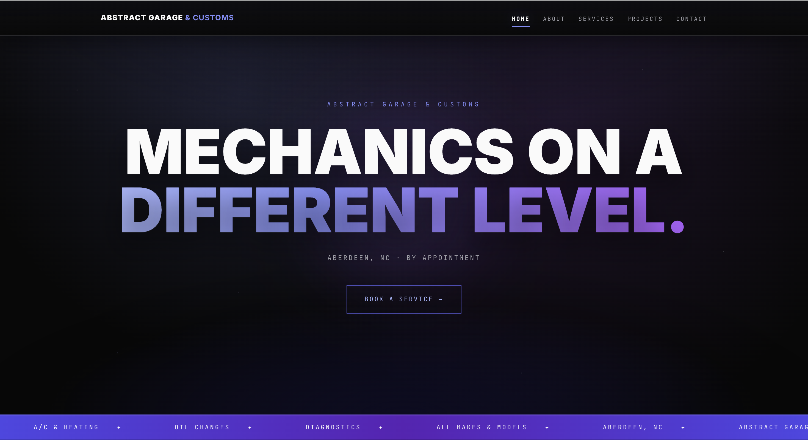

Client Project Review 2
Reviewing: Joshua Evans

Requirements Checklist
- 1. Submission leads to the correct page to be reviewed: ✓
- 2. No spaces or upper-cases in the file/folder names: ✓
- 3. Design:
- a. Page has sufficient contrast/font size: ✓
- b. Page has site colors and fonts using .css file: ✓
- c. Page follows CRAP principles: ✓ (though spacing and alignment could be improved)
- 4. Page has Header, Main, Footer, and Nav: ✓
- 5. Header has text in an h1: ✓
- 6. Main starts with an h2: ✓
- 7. Page has brand tagline on every page: ✕
- 8. Page footer:
- a. Has menu with user's pages: ✕
- b. HTML validates: ✕
- c. CSS validates: ✕
- 9. Other specific requirements: ✓
Other Comments
The site has a clean and organized structure across all five pages (Home, About, Services, Projects, and Contact), with consistent navigation and a clear layout. The content is easy to read and the design is simple and user-friendly. To improve further, adding a footer navigation menu, a visible brand tagline, and an Accumulus validation widget or HTML/CSS validation links would help fully meet the checklist requirements. Improving spacing and adding small visual elements could also enhance the overall design.